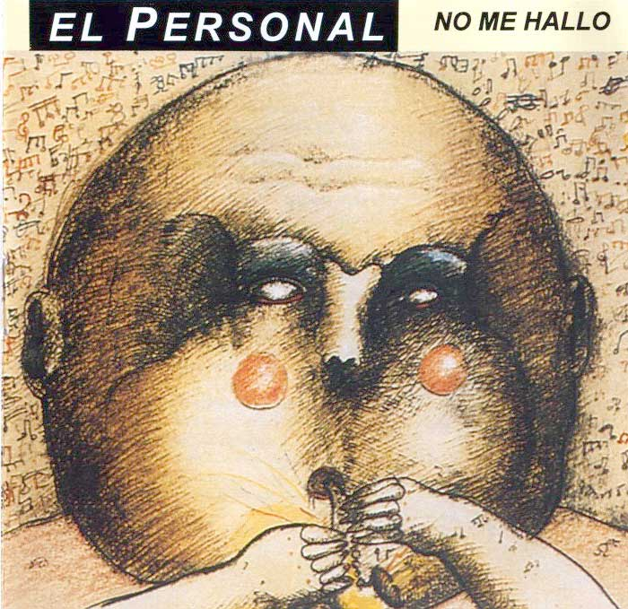

Escenario
Para realizar esta actividad debes ver el video “Video con explicación de la actividad 17” donde se proporciona la información necesaria para realizar la actividad.
JavaScript
JavaScript es un lenguaje de programación interpretado, dialecto del estándar ECMAScript. Se define como orientado a objetos,3 basado en prototipos, imperativo, débilmente tipado y dinámico.
Se utiliza principalmente en su forma del lado del cliente (client-side), implementado como parte de un navegador web permitiendo mejoras en la interfaz de usuario y páginas web dinámicas, aunque existe una forma de JavaScript del lado del servidor (Server-side JavaScript o SSJS).
JavaScript se diseñó con una sintaxis similar al C, aunque adopta nombres y convenciones del lenguaje de programación Java. Sin embargo Java y JavaScript no están relacionados y tienen semánticas y propósitos diferentes.
Todos los navegadores modernos interpretan el código JavaScript integrado en las páginas web. Para interactuar con una página web se provee al lenguaje JavaScript de una implementación del Document Object Model (DOM).
JQuery
jQuery es una biblioteca de JavaScript, creada inicialmente por John Resig, que permite simplificar la manera de interactuar con los documentos HTML, manipular el árbol DOM, manejar eventos, desarrollar animaciones y agregar interacción con la técnica AJAX a páginas web. Fue presentada el 14 de enero de 2006 en el BarCamp NYC.
jQuery es software libre y de código abierto, posee un doble licenciamiento bajo la Licencia MIT y la Licencia Pública General de GNU v2, permitiendo su uso en proyectos libres y privativos.1 jQuery, al igual que otras bibliotecas, ofrece una serie de funcionalidades basadas en JavaScript que de otra manera requerirían de mucho más código, es decir, con las funciones propias de esta biblioteca se logran grandes resultados en menos tiempo y espacio.
